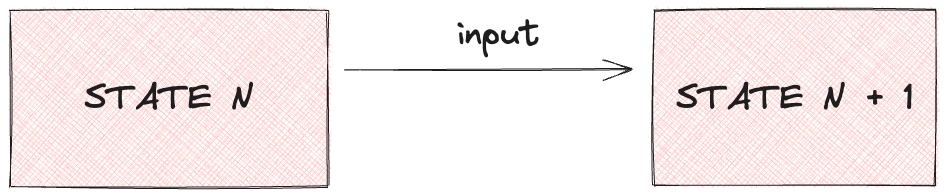
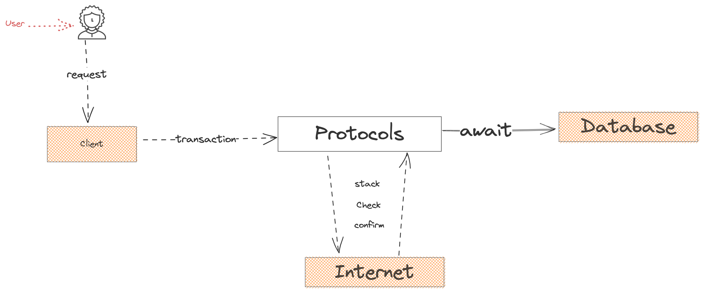
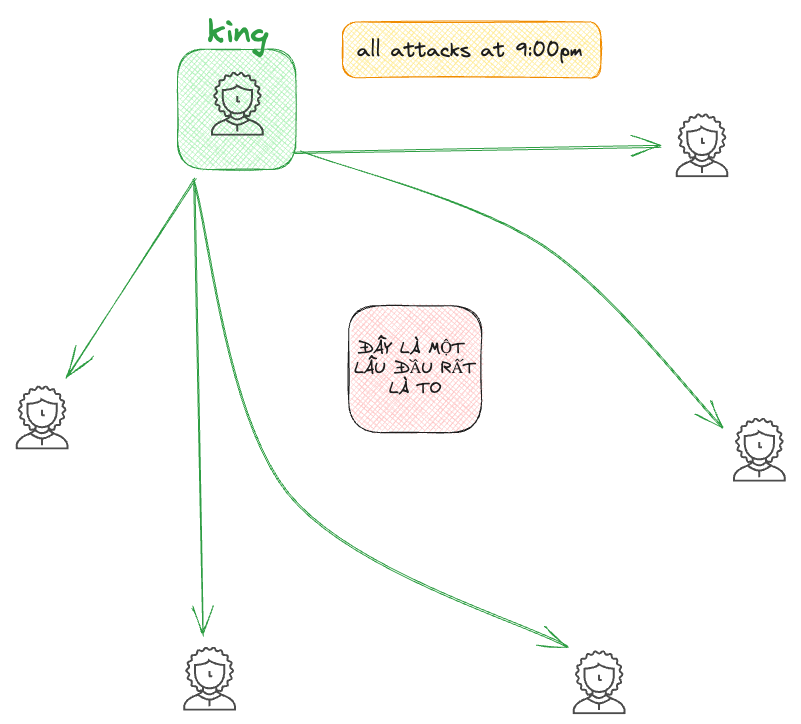
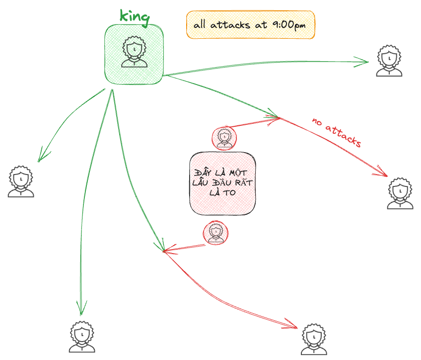
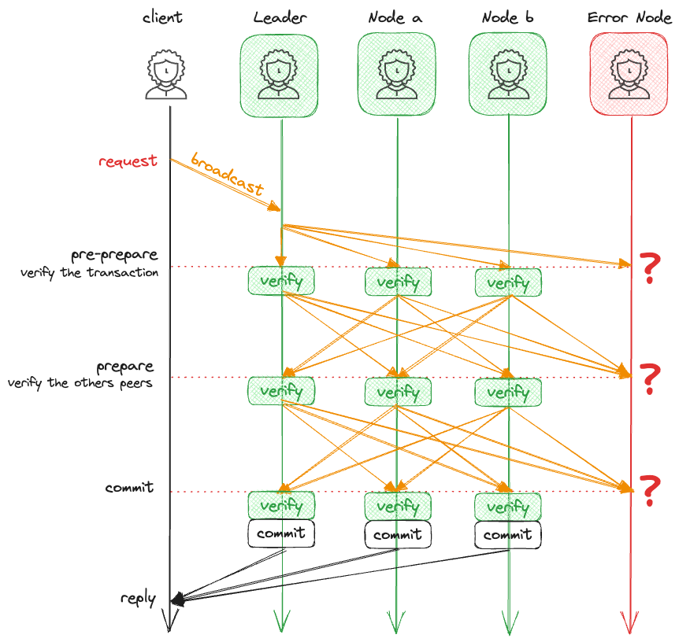
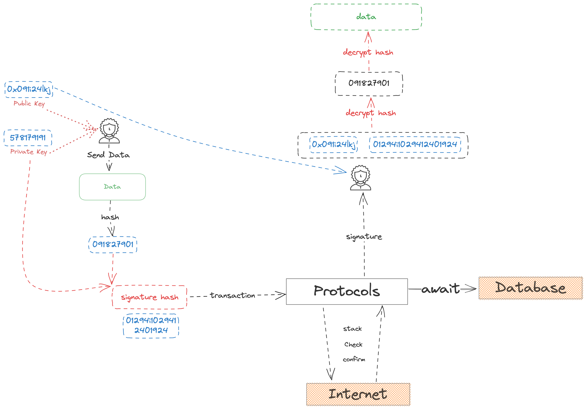
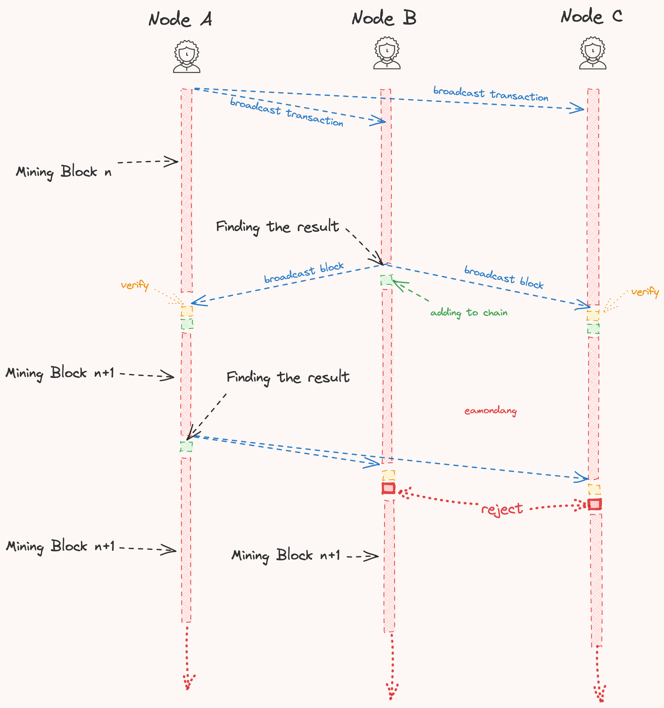
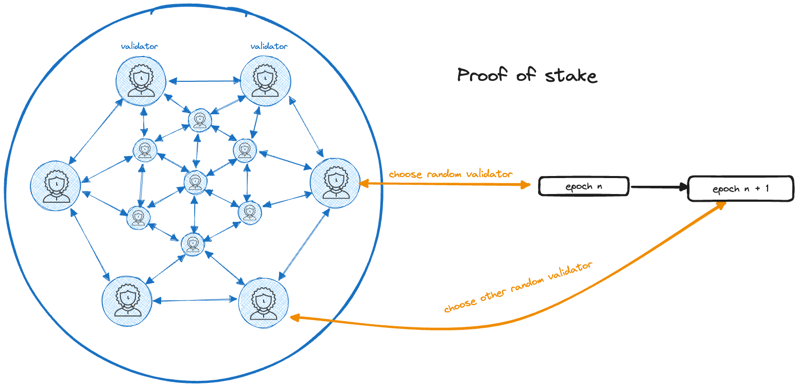

Blockchain Basic
Table of Contents
1. Program State

2. Overview Networks
3. DApp Architecture

4. Byzantine General's Problem
- Image 01 
- Image 02 
- Practical Byzantine Fault Tolerance 
5. Transaction flow

6. Consensus
- Proof of Work 
- Proof of Stake 
7. Requirements of Blockchain?
- High Availability
- Sustainability
- Irreversibility
- Transparency
- Append-only
Consensus- Security
- Global
8. Types of Blockchain
- Permissionless Blockchain - Public Blockchain
- Anyone can access to write the data
- Anyone can read
- Ex: 99%
- Permissioned Blockchain - Private Blockchain
- Participants need permission to accessing the data
- Readers need permission to read
- Ex: Hyperledger Fabric, Corda
- Consortium Blockchain
- Participants need permission to accessing the data
- Anyone can read
- Ex: Ripple
9. What is Blockchain
- It can be thought of as
ONE BIG COMPUTERmade up of small computers around the world. - All these computers (nodes) are connected to one another and have a full copy of the code and data.
- One of the best ways to understand blockchain is by comparing it with a
traditional client/server architecture
10. Components of Blockchain
- Data Models
- State Models
- Account Models
- Object Models
- Decentralized Models
- Permissionless Blockchain
- Permissioned Blockchain
- Consortium Blockchain
- Network Models
- Asynchronous
- Synchronous
- Partial Synchronous
Consensus- PoW/PoS/DPoS
- Tendermint BFT
- Doomslug
- TowerBFT
- HotStuff
- Narwhall & bullshark
- AptosBFT
- Nominated BFT (GRANDPA & BABE)
- …etc
- Cryptographic schemes
- Hashing
- Signature
- Merkle Tree
- Pub/Priv Key
- Zero-Knowledge Proofs
11. Decentralized Features
- Level of Decentralization
- Trilemma
- Security
- Decentralized
- Speed
- Trilemma
- Security
- Single Failure Tolerance (Consensus)
- Availability
- Sybil Attacks
- 51% Attacks
- Performance
- Communicate - Broadcast Data
- Argreement among Participants
12. Example
12.1. Install
- Install WSL if use Window
- Install Node.js or Node Version Manager
-
curl --proto '=https' --tlsv1.2 -sSf https://sh.rustup.rs | sh -
npm install -g near-cli
13. Cons
- Very Slow
- Expensive
- High Latency